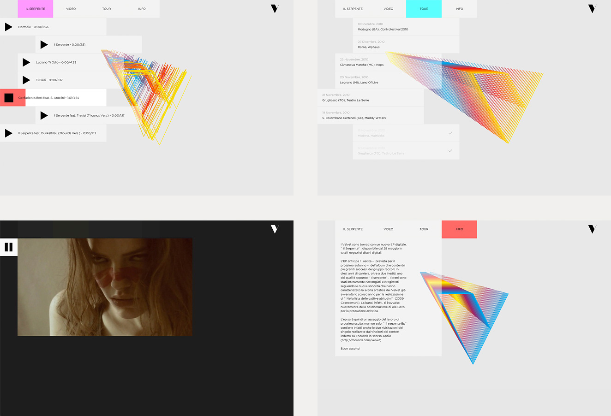
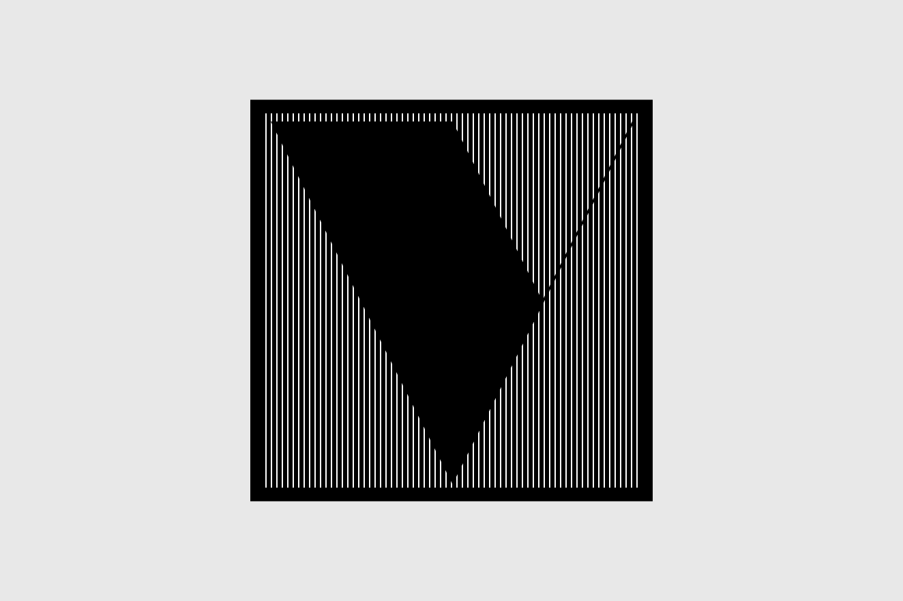
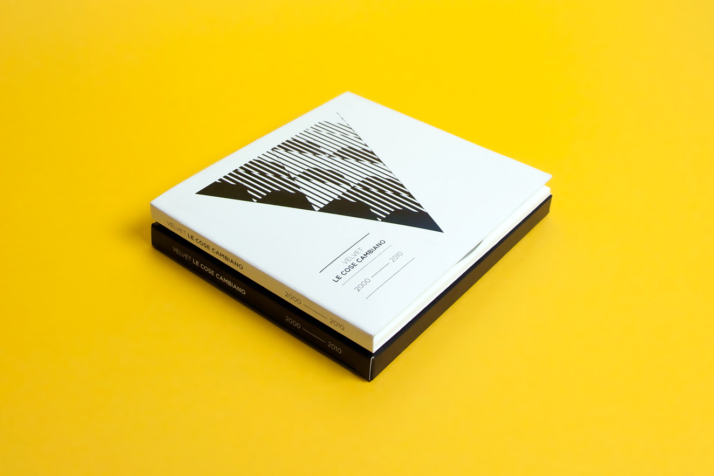
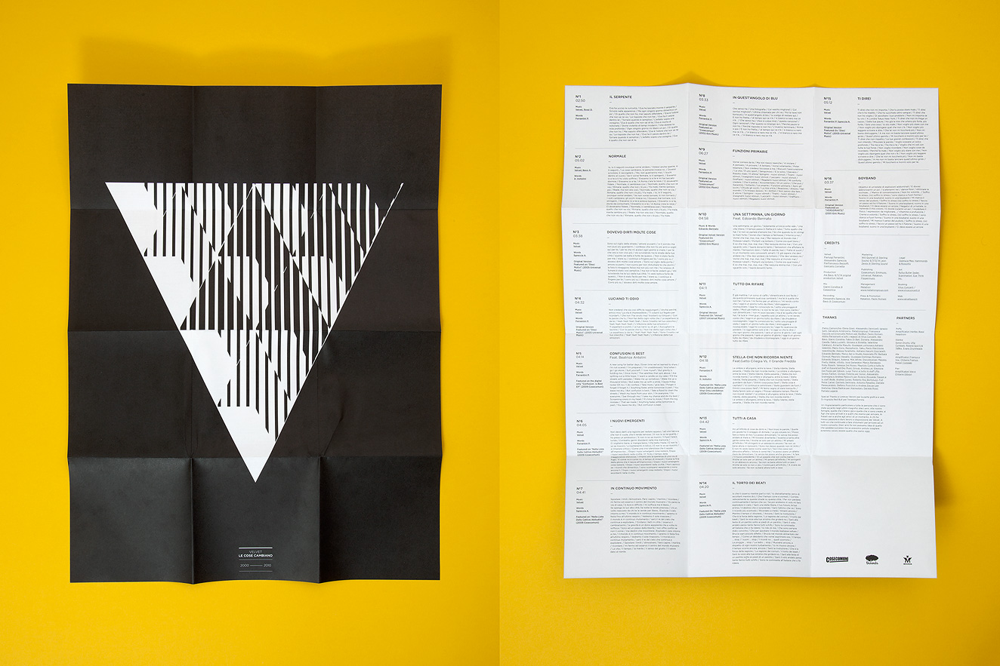
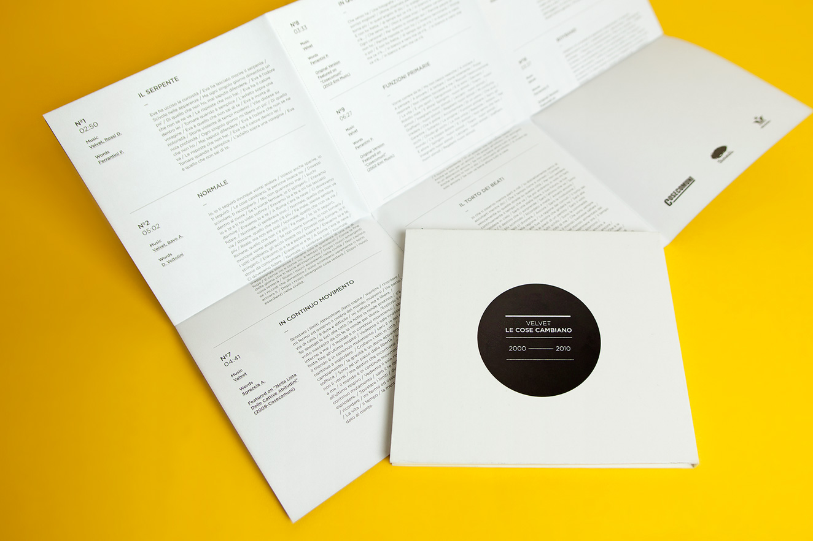
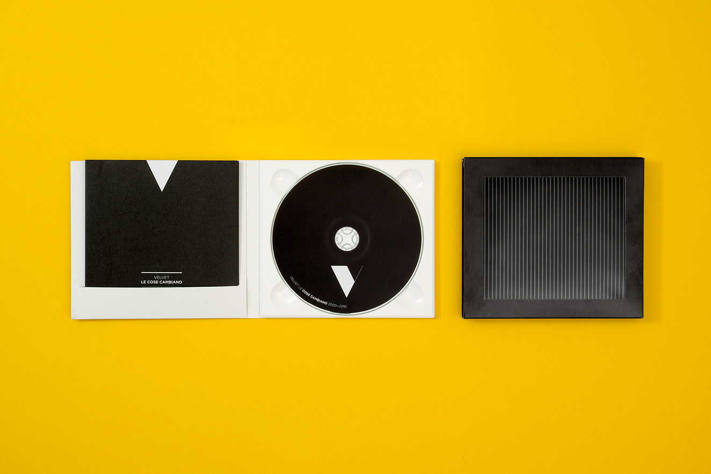

Velvet
Velvet is a well known italian band, surely not for their 2001 performance @ Sanremo Festival. 10 years later, with a more mature sound and look, they asked me to support the launch of their new ‘best of’ album.
First things first: a new mark for the band was required, and transforming the initial letter of the name into a strong, modular and recognisable shape seemed to me the best way to start with.
While the new mark was spreading on and off line, a digital EP – prelude of the ‘best of’ album – was ready to be launched: the perfect situation to establish the new logo. Influenced by the dynamic and electronic sound of this record, I started injecting some movement to the mark, designing and coding a promotional mini website. The sound responsive player allowed fans to experience and share the fresh brand identity.
A natural progression for the project was translating this property on the printed album “Le cose cambiano 2000-2010” (A possible translation could be “Things are changing”) and scanimation appeared to me the most appropriate solution.
Following the success of the fresh new look, and to create a more solid connection between the printed album and the live performance, I was asked to realize an interactive installation for the album première. With the help of Carlo Bernardini , I created a sound responsive fibre optics sculpture.
Identity, Installation, Print, Website — _blank"> velvetband.it/ilserpente
“Il Serpente” ― New single promotional website
     